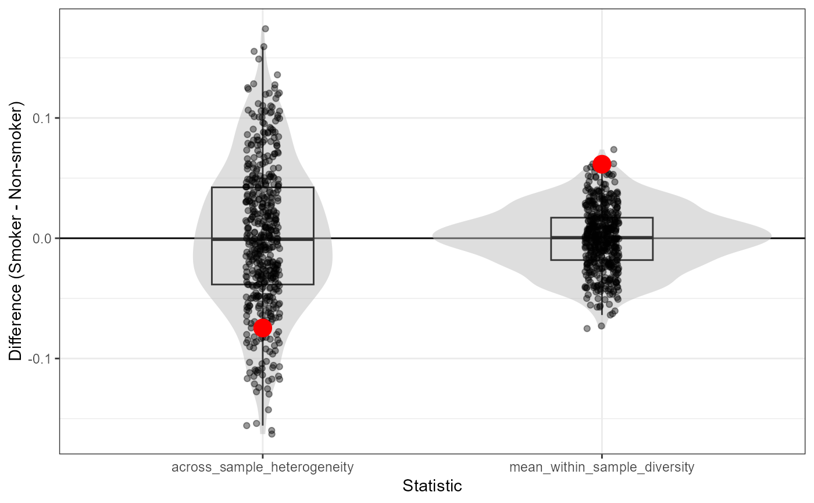

R/bootstrap.R
sigboot.Rdsigboot uses bootstrapping to evaluate differences in within-sample diversity and across-sample heterogeneity of mutational signature activity between pairs of groups of tumor samples. sigboot takes the same options as sigvar, so, as with sigvar, you can separately analyze multiple populations or groups of samples (specify group), and account for cosine similarity among signatures (specify S). sigboot follows the bootstrapping procedure defined by Efron and Tibshirani (1993). Details on the bootstrapping procedure are available in the Methods section of the accompanying paper.
A matrix or data frame with rows containing non-negative entries that sum to 1. Each row represents a sample, each column represents a mutational signature, and each entry represents the abundance of that signature in the sample. If sig_activity contains any metadata, it must be on the left-hand side of the matrix, the right K entries of each row must sum to 1, and K must be specified. Otherwise, all entries of each row must sum to 1.
The number of bootstrap replicate matrices to generate for each provided relative abundance matrix.
Optional; an integer specifying the number of mutational signatures included in sig_activity. Default is K=ncol(sig_activity)-length(group).
A string (or vector of strings) specifying the name(s) of the column(s) that describes which group(s) each sample belongs to.
Optional; a K x K similarity matrix with diagonal elements equal to 1 and off-diagonal elements between 0 and 1. Entry S[j,k] is the similarity between signature j and signature k, equaling 1 if the categories are to be treated as identical and equaling 0 if they are to be treated as totally dissimilar. The default value is S = diag(K).
Optional; should the across-sample variability (Fst) be normalized by its upper bound conditional on the mean activity of the most abundant signature be used as the measure of across-sample variability? Default is normalized = FALSE; use normalized = TRUE to compute normalized Fst. Fst can only be normalized if it is not weighted.
Optional; an integer to be used as a random seed for the simulations.
Optional; should all of the bootstrap replicate matrices be included in the output? Default is save_replicates = FALSE; save_replicates = FALSE savea memory when analyzing large datasets.
Optional; do you want to do a one- or two.sided test? Default is alternative = "two.sided". If you wish to do a one-sided test, specify either alternative = "less" or alternative = "greater".
A named list containing the following entries:
p_values: The probability of observing the observed difference in variability between each pair of groups if there were no difference between groups. Computed as the fraction of bootstrap differences greater than or equal to the observed difference. Depends on what alternative is specified ("greater", "lesser", or "two.sided").
bootstrap_distribution_plot: The distribution of bootstrap replicate differences in each variability value. The observed differences are shown in red. The further the red points are from 0, the more significant the statistical difference between groups.
observed_stats: The observed diversity statistics for the groups.
bootstrap_stats: The bootstrap replicate diversity statistics for the groups.
bootstrap_replicates: The bootstrap replicate matrices, reported only if save_replicates = TRUE.
# Estimate the uncertainty in the across-sample and mean within-sample variability of
# mutational signatures in ESCC samples grouped by country
# We provide a cosine similarity matrix in order to account for cosine similarity among signatures
smoker_boot = sigboot(sig_activity = smoker_sigs_chen, K = 3, n_replicates = 500,
group = "Smoker", S = smoker_sigs_chen_cossim,
seed = 1)
# We find that there is a strong, significant difference between smokers and non-smokers
# in their mean within-sample diversity, but that the difference in across-sample heterogeneity
# is less strong
smoker_boot$P_values
#> group_1 group_2 across_sample_heterogeneity
#> [1,] "Smoker" "Non-smoker" "0.23"
#> mean_within_sample_diversity
#> [1,] "0.014"
# We can visualize this result by looking at the observed differences between
# smokers and non-smokers and the bootstrap replicates, which assume no difference
# between these two groups
smoker_boot$bootstrap_distribution_plot
